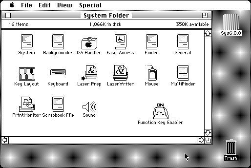

Download
FunKeyEnabler.zip (12K) Function Key Enabler 1.4 repackaged into a zipped hfs disk image and checksum file. The disk image can be mounted with Mini vMac.
FunKeyEnabler.sit.hqx (12K) Function Key Enabler 1.4 in the original format.
copyright: Cliff Harris
mod date: Jun 26, 1996
license: Freeware
from url :
Freeware Written by Cliff Harris
Allows you to invoke FKEYs using the functions keys on the keyboard. In combination with the option key, this allows up to 30 more FKEYs. The keyboard of the real Mac Plus doesn't have function keys, but Mini vMac will pass these keys to the emulated machine anyway, with exception of F1 and F2, which are used for an alternative way to type option and command.

If you find these downloads useful, please consider helping the Gryphel Project, which hosts them.
Here are the md5 checksums for the downloads, signed with Gryphel Key 5:
--------- GRY SIGNED TEXT --------- 9e2a091e0f3824450e2d68bc2fc2fb06 FunKeyEnabler.zip 41858eb11b6b0d3b889eaf4675ce7460 FunKeyEnabler.sit.hqx ------- BEGIN GRY SIGNATURE ------- Gry/4Xa8CFcUzxdN/BCMAuofs1eFkQ4a8Etl7SUD5xvxGFVbsuGYmaEK7QkzPQe7 JWJH7JztwLk1YTal98zmXrQKjlrHCxn0evZ+tBssTy7oT8RMvsI3hMDpVj/ECyX/ BeDN1unpng082fl4oS9iDdc4apGxoFrvZlzS3PivJldMDj/0eGjAXteZOis2aUwU -------- END GRY SIGNATURE --------